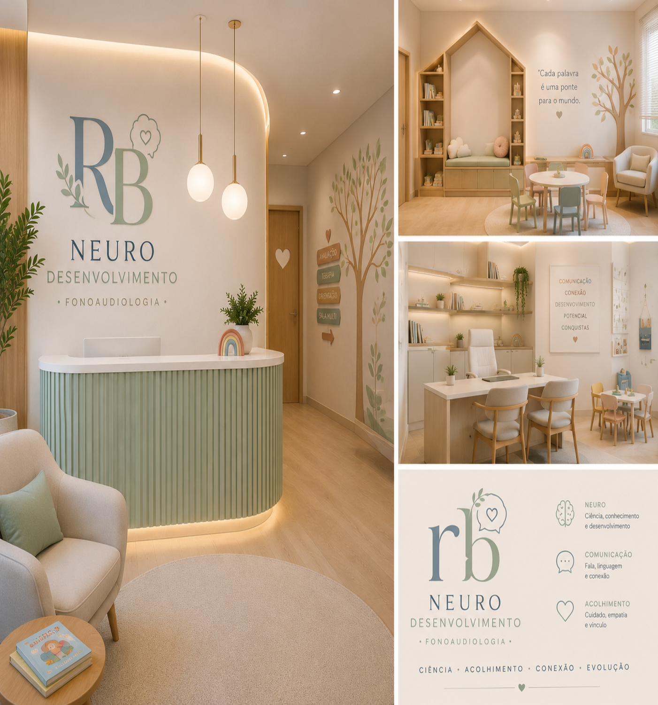

Fonoaudiologia especializada
Especialistas em linguagem, audição, cuidado neonatal e hospitalar
"Cuidando do desenvolvimento da linguagem, audição e alimentação infantil com conhecimento técnico, sensibilidade e atenção individualizada para cada criança.".

Dra. Rafaella Bernardino
Meu objetivo é promover o desenvolvimento saudável da comunicação desde os primeiros dias de vida. Também atuo com especialização em Transtorno do Espectro Autista (TEA).
Desenvolvo meu trabalho com base em evidências científicas atualizadas, prezando pela excelência técnica, ética profissional e atendimento humanizado.
Realizo avaliação, diagnóstico e intervenção fonoaudiológica em crianças, adultos e recém-nascidos, com foco no desenvolvimento das habilidades comunicativas, na reabilitação auditiva e no suporte às funções orais, especialmente em contextos clínicos e hospitalares.
Na área de neonatologia, atuo no acompanhamento de recém-nascidos, incluindo prematuros, promovendo o adequado desenvolvimento da sucção, deglutição e respiração.
Atendimento para TEA
Atendimento fonoaudiológico individualizado para pessoas com Transtorno do Espectro Autista (TEA), com foco no desenvolvimento da comunicação, linguagem, interação social e habilidades comunicativas necessárias para o dia a dia. Cada plano terapêutico é elaborado de forma personalizada, considerando as necessidades, potencialidades e objetivos de cada paciente. Na área de Audiologia, realizo avaliações e acompanhamento da saúde auditiva, contribuindo para a identificação, prevenção e monitoramento de possíveis alterações que possam impactar a comunicação, a aprendizagem e a qualidade de vida. Ofereço um atendimento ético, humanizado e baseado em evidências científicas, com acolhimento e atenção às necessidades de cada paciente e sua família, promovendo desenvolvimento, autonomia e bem-estar.
Atenção: o diagnóstico precoce e o acompanhamento especializado são fundamentais para melhores resultados no desenvolvimento da comunicação e da qualidade de vida.
Por que crianças com TEA precisam de um fonoaudiólogo
Crianças com TEA frequentemente apresentam alterações no desenvolvimento da comunicação, linguagem e interação social, aspectos fundamentais para sua participação e desenvolvimento global.
- Intervenção fonoaudiológica para avaliação das habilidades comunicativas
- Estratégias individualizadas para comunicação funcional
- Estimulação de repertório linguístico e habilidades sociais
- Suporte em possíveis dificuldades alimentares associadas
A atuação é baseada em evidências científicas e direcionada às necessidades específicas de cada criança, contribuindo para maior autonomia, inclusão social e qualidade de vida.
Minhas atuações
Áreas de atendimento e suporte especializado.
- Fonoaudiologia Neonatal: avaliação da sucção, apoio à amamentação, intervenção em prematuros e orientação para pais.
- Linguagem Infantil: atraso de fala, dificuldades de comunicação, estimulação precoce e desenvolvimento cognitivo-linguístico.
- Fonoaudiologia Hospitalar: reabilitação da deglutição, atendimento a pacientes internados, apoio em casos neurológicos, orientação à equipe e prevenção de complicações.
- Audiologia: avaliação auditiva, triagem neonatal, monitoramento do desenvolvimento auditivo e orientações preventivas.
Como funcionam os atendimentos
- Avaliação inicial detalhada
- Entendimento completo das necessidades do paciente
- Plano terapêutico personalizado
- Acompanhamento contínuo e evolução monitorada
Para quem é indicado
- Bebês recém-nascidos
- Crianças com atraso de fala
- Prematuros
- Pacientes hospitalizados
- Pessoas com dificuldades de deglutição
- Famílias que buscam orientação especializada
Galeria

Contato
- 📍 Atendimento em: Indianópolis e Uberlândia
- 📞 Telefone/WhatsApp: (34) 99175-1033
- 📧 Email: Rafaella1bernardino@gmail.com.br
- 💬 WhatsApp: (34) 99175-1033
Agendamentos mediante contato prévio.